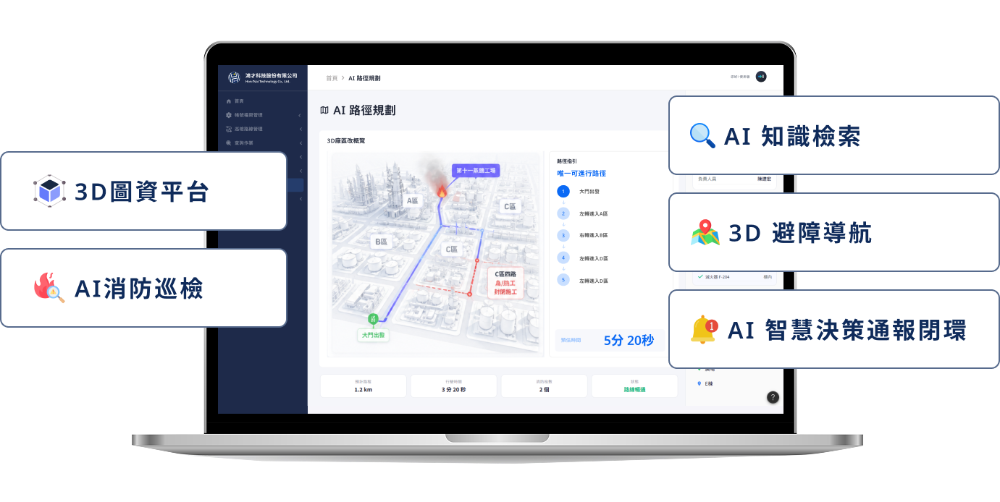
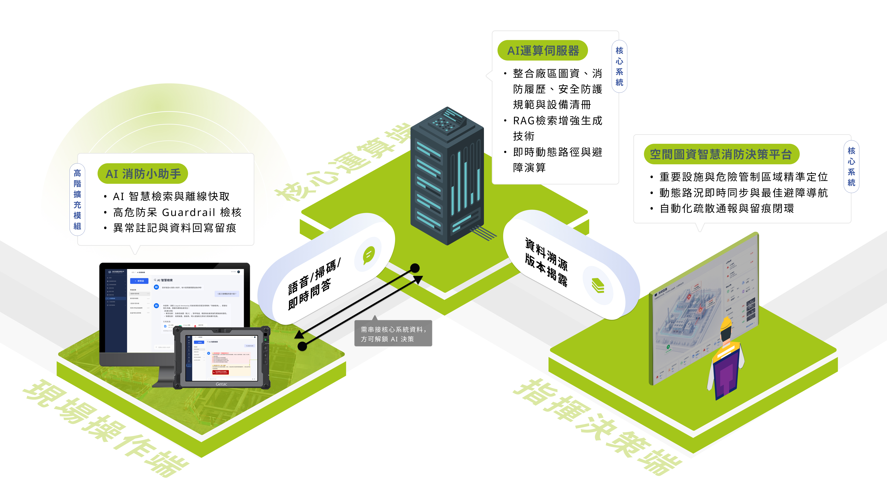
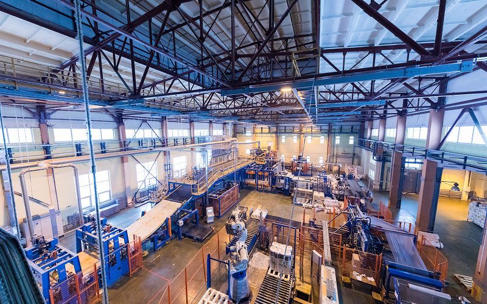

如何協助企業
How To Help Businesses
打造企業專屬的 AI 智慧化現場決策入口
在高度複雜的工業廠區與大型建築營運中，傳統消防巡檢往往面臨資訊散落、紙本紀錄低效、現場搶救時缺乏即時圖資等痛點。鴻才科技結合最新 AI 應用，推出「消防 AI 小助手」，打破傳統消防系統操作複雜的門檻，讓無專業技術背景的一般使用者也能快速上手。我們將「單純的巡檢資料」全面升級為「具備發現、通報、派工到複查完整閉環」的智慧安全機制，實現平日輕鬆巡檢、災時精準導引與安全留痕。
產品定位 (核心系統 x AI升級模組)
巡檢管理系統
建立完整消防設備履歷、巡檢紀錄、維修保養、H-Card、安全資料表(SDS)、化學品管理、安全作業標準與各項防護規範。透過自動化串接，打造值得信賴的 AI 消防知識庫。
AI 消防小助手
將消防防護計畫、消防法規、緊急應變程序全面數位化，結合 AI 消防小助手，自動提供法規查詢、應變建議、人員疏散及事件追蹤，建立無懈可擊的 AI 消防治理機制。

常見困擾
資訊分散缺乏整合
H-Card、安全資料表(SDS)、廠區圖資與消防資源散落各處，緊急時缺乏統一平台與 AI 智慧檢索輔助，現場查詢耗時，影響應變速度。
設備異常追蹤困難
現場發現異常後需層層通報，缺乏即時性與自動追蹤機制，容易造成權責不清與改善延誤。災時資訊獲取延誤
突發狀況下紙本圖資翻閱困難，無法即時得知危險物品配置，若遇道路施工等狀況更新不及，容易延誤黃金搶救時機。合規審計與資料留痕不足
高危物質資訊、資料版本與人員操作若沒有完整留痕，事後追查困難，進而削弱系統決策的公信力與可靠度。情境模擬圖
Simulation diagram

設計理念
Design Concept
- 【務實導向】無縫升級既有系統：不需花大錢重做系統，透過擴充「AI 消防小助手」，直接將現有的巡檢系統升級為現場決策入口。
- 【資安至上】地端私有 AI 部署：針對重視核心機密與高資安需求的企業，提供完全獨立運作的地端（On-Premises）架構，確保安檢資料、機密清冊與圖資絕不上雲、零外洩風險。
- 【精準可信】 RAG 技術與降低 AI 幻覺：實時串接廠區內部可信知識庫 (如各項安全守則與重要物資動態存量），所有 AI 生成答覆皆明確標示「引用來源與資料版本」，確保決策透明可追溯。
- 【前線友善】直覺對話與零門檻上手：專為一般使用者設計，支援口語、文字與圖像對話式 AI 介面，免去冗長教育訓練即可全廠輕鬆推廣。
- 【完全閉環】發現到複查之安全留痕：建立「發現-通報-派工-複查」數位歷程，自動派發工單並追蹤改善進度，消除權責不清的痛點。
- 【預防維護】數據驅動與智慧應變：透過歷史巡檢數據累積與衰退趨勢分析，實現預防性維護。
無縫升級既有系統
地端私有 AI 部署
RAG技術與降低AI幻覺
直覺對話與零門檻上手
發現到複查之安全留痕
數據驅動與智慧應變
核心優勢
Feature

解決方法
Solution
系統核心功能
- 對話式AI互動小助手模組
- RAG知識庫檢索模組
- 巡檢與自動派工閉環模組
- 災時2D平面圖資與HAZMAT導引模組
- 合規稽核與報表產出模組
硬體需求
- 地端AI運算伺服器
(On-Premises 高規格資安防護) - 行動終端/平板電腦
系統整合服務
- 設備巡檢系統串接
應用層面
Application
石化/煉油廠
建構高危環境 AI 防護網
透過「巡檢系統」數位化管理全廠區的消防設備履歷與危險區域定位，為廠區安建立堅實底座；當事故發生時，「消防 AI 小助手」便能立即調用這龐大且完善的資料庫，快速提供最佳救援避障動線與專屬安全規範，大幅提升高風險場域的消防安全與應變效率。
半導體與科技業
守護高價值機台與人員
針對無塵室與高價值機台，先以「巡檢系統」建立嚴謹的設備生命週期與巡檢歷程，現場人員即可隨時透過「消防AI 小助手」直覺的語音或圖像詢問，快速調閱複雜機台的防護法規、安檢 SOP 與緊急應變措施，免去查找紙本的時間並大幅強化設備管理效率。
能源/電力與
公共基礎設施
打造全天候 AI 災害應變
面對佔地廣大的公共設施場域，先由核心的「巡檢系統」系統化追蹤各節點的安檢進度與消防設備妥善率，確保無安檢死角；並結合「消防 AI 小助手」全天候的事故分析與災時智慧導航能力，精準給出決策建議，完美補足大型設施人力巡護的極限，提升災害應變能力。

大型工廠/製造業
加速智慧工廠數位轉型
以「巡檢系統」完整記錄廠區空間、安防設備狀態並自動追蹤缺失改善工單，利用「消防 AI 小助手」便能根據這些歷史巡檢數據分析設備衰退趨勢，實現預防性維護，甚至能一鍵產出合規報表，打造智慧消防管理與設備全生命週期管理，讓廠區輕鬆應對外部稽核。
商辦/醫院/校園/
物流中心
提升日常消防管理品質
透過「巡檢系統」將複雜的建築隔間、避難路線與消防資源配置全面數位建檔後，遇到突發狀況時，無專業消防背景的醫護、教職或行政人員也能透過極簡操作，透過「消防 AI 小助手」快速提供疏散指引、法規查詢與事件留痕追蹤，全面保障大眾空間的人員安全與日常管理品質。